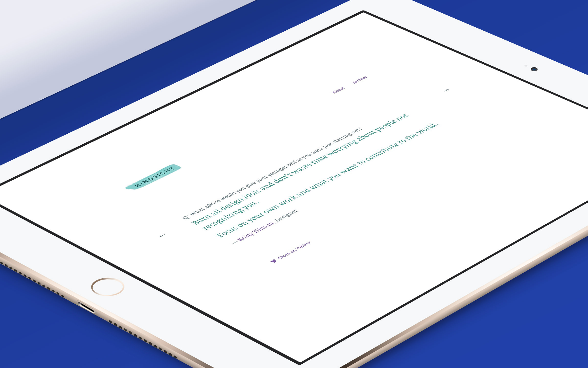

👋
Hello stranger, I'm Netta, a digital designer living in San Francisco. I know you're here to check out my work, so let's get to it.


I've always been curious about the various forms of design and I've been carrying a sketchbook and pencil with me at all times since I was a kid.
These days, I'm the Head of Design at Tally, and in my spare time, I work on Hindsight. Many moons ago, I was lucky enough to work alongside some insanely talented peeps at places like
I'm almost always listening to music, I love making photos, and I'm often curating my massive collection of animated gifs.
Wanna say hi? Drop me a line or shoot me a tweet. Chances are I'll say hi back.
n.